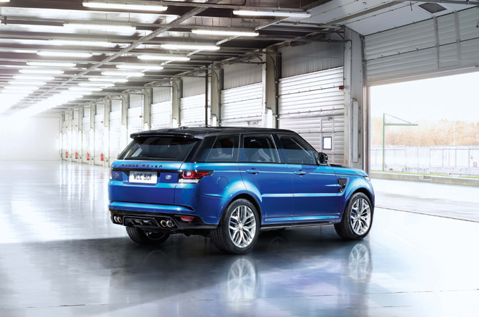
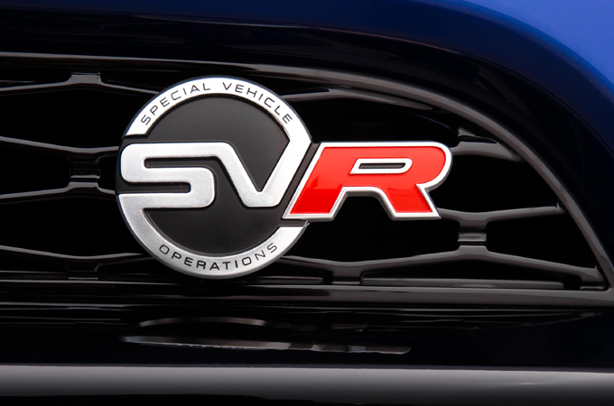

LAND ROVER PRESENTA EL RANGE ROVER SPORT SVR, EL MÁS RÁPIDO, DINÁMICO Y POTENTE DE TODA LA HISTORIA
• Creado por el departamento Special Vehicles Operations de Jaguar Land Rover, el nuevo Range Rover Sport SVR es capaz de acelerar de 0 a 100 km/h en tan solo 4,7 segundos y alcanzar una velocidad máxima limitada electrónicamente de 260 km/h.
• El nuevo Land Rover Sport completó una vuelta al exigente trazado alemán de Nürburgring Nordschleife en 8 minutos y 14 segundos.
• Las mejoras del Range Rover Sport SVR respecto al Range Rover Sport estándar incluyen un propulsor de 550 CV y 680 Nm de par, una transmisión ZF 8HP70 de ocho relaciones optimizada, nuevas llantas opcionales de 22 pulgadas, amplias mejoras en los sistemas de suspensión y dirección y un habitáculo con detalles exclusivos.
Capaz de acelerar de 0 a 100 km/h en tan solo 4,7 segundos y alcanzar una velocidad máxima de 260 km/h limitada electrónicamente, el Range Rover Sport es el primer Land Rover que incorporará la nueva insignia SVR de alto rendimiento.
El motor 5.0 V8 sobrealimentado del SVR ha sido diseñado para proporcionar 550 CV de potencia y 680 Nm de par, lo que supone un considerable aumento de 40 CV y 56 Nm respecto al Range Rover Sport V8 S/C, mientras que su avanzada transmisión automática ZF 8HP70 de ocho velocidades y el bastidor con tracción a las cuatro ruedas se han optimizado a fin de complementar el asombroso rendimiento que alcanza en cualquier condición.
En los ensayos iniciales, el SUV más dinámico de Land Rover recorrió el legendario circuito alemán de Nürburgring Nordschleife en 8 minutos y 14 segundos, uno de los tiempos más rápidos jamás registrados por un SUV de producción en serie.
El nuevo SVR desata todo el potencial del ligero y robusto chasis de aluminio del Range Rover Sport, al tiempo que conserva el refinamiento, el lujo y la capacidad todoterreno que han otorgado a Range Rover su fama internacional.

Además, incorpora dos novedades a escala mundial para Range Rover. Por un lado, un escape activo en dos etapas con control eléctrico que ofrece, a alto régimen, un sonido que recuerda a los automóviles de competición, sin perjudicar en ningún momento el refinamiento durante la conducción relajada. Por el otro, sus exclusivas llantas de aleación opcionales de 22" y los neumáticos 295/40 R22 Continental SportContact optimizan el rendimiento y mejoran aún más el comportamiento del Range Rover Sport SVR. El equipamiento de serie incluye las nuevas llantas de aleación de 21" que, combinadas con los neumáticos 275/45 R21, ofrecen una incomparable capacidad todoterreno.
Las mejoras en el diseño exterior garantizan el sorprendente impacto visual que produce el SVR, además de potenciar la refrigeración y la eficiencia aerodinámica. Su interior personalizado con asientos deportivos exclusivos refuerza la exclusividad de su aspecto, a la vez que garantiza que los ocupantes mantengan una posición firme y segura durante la conducción más enérgica.
Como anticipo a su estreno mundial, John Edwards, Managing Director de Special Operations de Land Rover, ha comentado: “El Range Rover Sport SVR va más allá de su diseño vanguardista y sus excepcionales capacidades tanto dentro como fuera de la carretera. Su espectacular rendimiento hará realidad los deseos de aquellos clientes especialmente exigentes.”
“Se han incluido toda una serie de exhaustivas revisiones que han sido especialmente desarrolladas por el equipo de Special Vehicle Operations de Land Rover para convertir a este modelo Premium en un modelo aún más distintivo por dentro y por fuera, así como para llevar al siguiente nivel las capacidades dinámicas del mismo sin sacrificar ni un ápice el confort, el refinamiento y la versatilidad todoterreno. El Range Rover Sport SVR es sin ninguna duda, el SUV con las mejores prestaciones del mundo”.
El nuevo Range Rover Sport SVR toma como referencia el exitoso Range Rover Sport, que con su bastidor monocasco integral de aluminio ha reducido su peso en un 39% en comparación con el modelo predecesor y ofrece una estructura óptima, resistente, rígida y ligera, en la que inspirarse para crear el Range Rover Sport SVR.
El Range Rover Sport SVR, creado por el equipo de Special Vehicle Operations de Jaguar Land Rover, se producirá de forma paralela a los actuales modelos y se venderá a través de la red oficial de concesionarios Land Rover.
El Range Rover Sport SVR, cuyo diseño, ingeniería y fabricación se han realizado en Inglaterra, supone un paso más allá en la búsqueda de la robustez, el perfeccionismo y la ingeniería aplicada que distinguen a la marca Land Rover.
El Range Rover Sport se introdujo en el mercado en 2005 y desde entonces se han producido más de 500.000 vehículos.
El Land Rover más potente de la historia
El alma del Range Rover Sport SVR es la evolución del motor V8 sobrealimentado de 5.000 cc, realizado completamente en aluminio y cuyas camisas de los cilindros, en hierro fundido, y tapas de los cojinetes principales, de pernos cruzados, proporcionan una combinación de robustez, rendimiento y refinamiento sin igual.
Los ingenieros de Special Vehicle Operations de Land Rover han optimizado minuciosamente el sistema de gestión electrónica de Bosch y recalibrado la válvula electrónica del compresor para aumentar la presión de alimentación máxima cuando se solicita el máximo rendimiento del propulsor, manteniendo al mismo tiempo la excepcional flexibilidad del motor V8 que proporciona una asombrosa versatilidad todoterreno y una aceleración sin esfuerzo en cualquier circunstancia.
El considerable aumento de potencia y par hasta alcanzar 550 CV y 680 Nm, 40 CV y 56 Nm respectivamente, otorga al SVR una aceleración de 0 a 100 km/h en únicamente 4,7 segundos y una velocidad máxima limitada electrónicamente de 260 km/h. El registro que ha conseguido en el circuito de Nürburgring Nordschleife, de 8 minutos y 14 segundos, pone aún más de relieve su elevado potencial.
Las exclusivas mejoras de diseño del Range Rover Sport SVR también contribuyen a su rendimiento. Una de ellas consiste en la incorporación de entradas de aire en el parachoques frontal de mayor tamaño para aumentar el flujo de aire a los dos intercambiadores de calor, lo que reduce la temperatura del aire presurizado generado por el compresor antes de su acceso al motor para mantener un excelente rendimiento incluso en condiciones extremas.
La sólida plataforma que proporcionan el monocasco de aluminio junto con la suspensión mejorada y rótulas más firmes ha permitido a los ingenieros de Land Rover incrementar aún más la respuesta del increíblemente potente propulsor.
Por ejemplo, cuando el conductor levanta el pie del acelerador, la carga de aire se reduce mucho más rápidamente que en el resto de modelos de la gama Range Rover Sport existentes, dando lugar a una respuesta inmediata para una experiencia de conducción más dinámica.
En modo Dynamic, estas características se intensifican gracias a un tacto más directo y preciso del pedal del acelerador y una respuesta más dinámica de la transmisión de ocho velocidades.
Además, el suministro de combustible ya no se detiene en el corte de alimentación, con lo que se origina un característico sonido a través del escape. El consumo de combustible y las emisiones de CO2 del SVR no se ven afectados por el extraordinario rendimiento y permanecen al mismo nivel que en el V8 sobrealimentado del que deriva: 12,8 l/100 km y 325 g/km. Esto se debe a las avanzadas y altamente eficientes características del diseño del motor, que incluyen unos niveles de baja fricción interna líderes en su clase, un sistema de inyección directa de alta presión, distribución variable independiente mediante doble árbol de levas y un avanzado sistema Stop/Start inteligente que detiene el motor cuando se encuentra al ralentí y lo reinicia cuando el conductor libera la presión sobre el pedal de freno.
Cambios de marcha aún más rápidos para una conducción excitante
La avanzada transmisión automática ZF 8HP70 de 8 velocidades del Range Rover Sport SVR ha sido optimizada para ofrecer un mayor rendimiento. Junto a los neumáticos opcionales de 22" Continental SportContact, la configuración revisada del chasis y un sólido sistema de tracción a las cuatro ruedas, la transmisión recibe además un incremento de la entrega de par en sus relaciones más cortas para conseguir un impresionante tiempo de aceleración de 0 a 100 km/h en tan solo 4,7 segundos.
Los tiempos de cambio de marcha se han reducido hasta en un 50% gracias a una interrupción del suministro del combustible extremadamente rápida y precisa al cambiar a una marcha superior, lo que permite que los cambios sean más rápidos, contundentes y extremadamente precisos mientras se aprovecha la inercia del motor para proporcionar una inigualable sensación de aceleración en todos los cambios de marchas. Gracias a eso, se crea una conexión más directa e inmediata con el vehículo y se puede confiar en que el propulsor se halla en todo momento en su zona de máximo rendimiento.
La gestión de la transmisión supervisa la conducción y monitoriza las fases de aceleración y frenada, las fuerzas laterales en curva, las solicitudes del conductor e incluso el grado de inclinación del terreno antes de elegir uno de los 25 programas predeterminados para adaptarse a la perfección al comportamiento del conductor y las condiciones de la carretera. Por ejemplo, una conducción más deportiva desencadena cambios de marcha más agresivos y retrasa los cambios a marchas superiores hasta que se alcanzan un régimen elevado.
Para garantizar que el Range Rover Sport SVR no sufra ninguna pérdida de estabilidad, el sistema de gestión electrónica aumenta el régimen del propulsor automáticamente en las reducciones de marcha más contundentes con el fin de suavizar la transición entre ellas. Esta función también permite a la transmisión llevar a cabo una serie de reducciones a alta velocidad en caso de una frenada de emergencia con el máximo refinamiento y control.
Cuando el sistema detecta que el vehículo se halla trazando una curva, la transmisión mantiene la misma relación de cambio a lo largo de todo el viraje para garantizar una excelente estabilidad al tiempo que también garantiza una respuesta óptima cuando el conductor acelera de nuevo a la salida de la curva.
Del mismo modo, la transmisión reconoce cuando se trata de una maniobra de adelantamiento y mantiene la relación más corta posible para asegurar una aceleración instantánea que garantice la máxima seguridad y emoción en la conducción.
Esta respuesta dinámica no disminuye el refinamiento del Range Rover Sport, líder en su clase: el convertidor de par de la transmisión ZF de ocho velocidades garantiza la máxima suavidad en la primera marcha, mientras a partir de la segunda un embrague bloquea el mecanismo para conseguir un vínculo directo entre la transmisión y las ruedas motrices y proporcionar una sensación de conducción mucho más activa para el conductor.
La transmisión se puede controlar bien desde las levas situadas en el volante o desde la palanca de cambios. El conductor puede seleccionar de manera predeterminada el modo automático, realizar intervenciones manuales ocasionales o desplazar la palanca de cambios hacia la izquierda para recuperar el control manual. En el modo manual, los cambios de marcha se realizan a través de las levas o empujando hacia delante la palanca de cambios para reducciones de marcha y tirando hacia atrás para cambios a marchas superiores, imitando la lógica de cambio de los vehículos de competición.
En el modo Dynamic, la estrategia de cambio se intensifica aún más: la transmisión no engrana una marcha superior al llegar al régimen máximo y solamente se reduce a una relación inferior para evitar que el motor se cale.
El Range Rover Sport SVR ha sido diseñado para ofrecer las increíbles aptitudes que han otorgado su fama a Land Rover. Está equipado con tracción a las cuatro ruedas permanente, una caja transfer de dos relaciones y un reparto de par motor entre ambos ejes al 50%.
Con la ayuda de un embrague multidisco alojado en el diferencial central que distribuye el par entre los ejes delantero y trasero de manera electrónica, se asegura la tracción más adecuada sin importar la superficie sobre la que se circule. Los sofisticados sistemas de control electrónico contribuyen a mejorar aún más la característica capacidad de Land Rover y en condiciones extremas puede canalizar hasta el 100% del par a cualquiera de los ejes.
La caja transfer permite seleccionar entre dos rangos de velocidades utilizando un sistema de cambio en marcha totalmente sincronizado que permite al conductor cambiar entre una y otra relación a velocidades de hasta 60 km/h para una flexibilidad excepcional. El rango de velocidades estándar ofrece una relación de transmisión directa de 1:1, mientras que la relación del rango de bajas velocidades es de 2,93:1, proporcionando una relación extremadamente reducida.

Para optimizar aún más la tracción y la estabilidad, se ha recalibrado el bloqueo del diferencial trasero activo del SVR. El diferencial ahora se bloquea antes y en mayor medida para obtener un mayor rendimiento y asegurar que el par se transfiera a la rueda trasera con la mayor tracción, aumentando la agilidad.
El SVR utiliza el sistema de frenos del vehículo para imitar el efecto de un diferencial de control de reparto del par en curva, equilibrando constantemente la distribución de par del motor entre las cuatro ruedas en las curvas para conseguir un mejor agarre y dirección y reducir el subviraje. El ajuste de este sistema es exclusivo para el Range Rover Sport SVR.
El sistema controla el vehículo 100 veces por segundo a través del módulo de control dinámico de estabilidad. A medida que el coche acelera en una curva, el sistema analiza y detecta la posibilidad del inicio del subviraje. En ese momento se aplican niveles imperceptibles de frenado para corregir el comportamiento del vehículo, mientras que el par motor se transfiere a las ruedas exteriores, que tienen más agarre, para mantener así la máxima tracción y el control de la dirección.
Diseño vanguardista
El audaz diseño exterior y el lujoso interior de los SUV deportivos Premium de Land Rover se han mejorado en el Range Rover Sport SVR con una amplia gama de mejoras estéticas.
Diseñado en exclusiva por el equipo de Special Vehicle Operations de Jaguar Land Rover, el Range Rover Sport SVR tiene un aspecto impactante gracias a un nuevo parachoques delantero con tomas de aire trapezoidales y una inscripción Range Rover en tono oscuro en el capó, que también cuenta con entradas de aire optimizadas y una nueva rejilla con un acabado oscuro que contrasta con la sorprendente iluminación LED de diseño que incorporan los faros. En los laterales del vehículo, las aletas de aluminio totalmente nuevas presentan un musculoso diseño con nuevas tomas de aire laterales que dotan de mayor potencia visual al modelo. En la parte trasera, la prominente insignia de Range Rover Sport SVR y un pronunciado y elevado alerón con una llamativa luz de freno central resaltan la intención deportiva del vehículo. El exclusivo parachoques trasero cuenta con un difusor en negro brillante que incorpora los tubos de escape cuádruples exclusivos del SVR, que distinguen al instante a este modelo de altas prestaciones.
Los nuevos pasos de rueda albergan las llantas opcionales de aleación de 22" y múltiples radios, que aportan una apariencia robusta y poderosa que encaja a la perfección con el extraordinario rendimiento y la respuesta dinámica del Range Rover Sport SVR.
Muchas de las modificaciones aplicadas al diseño del Range Rover Sport SVR mejoran también su elevado rendimiento. Por ejemplo, las mayores dimensiones de las tomas de aire del parachoques frontal crean un flujo de aire adicional en los intercambiadores de calor que canalizan el aire hacia el potente motor sobrealimentado de 550 CV.
El nuevo alerón trasero reduce la elevación de la carrocería y se ha equilibrado minuciosamente con el nuevo parachoques frontal, bajo el cual se incorpora un sistema que reduce el ruido del viento para garantizar la máxima comodidad de los pasajeros y mejorar aún más la eficiencia aerodinámica. También reduce la elevación frontal para garantizar que los neumáticos delanteros conserven altos niveles de agarre durante la conducción deportiva. Para una conducción todoterreno extrema, existe la posibilidad de retirar la sección inferior del parachoques frontal para acometer unos ángulos más agresivos.
Además, se ha añadido refrigeración adicional al sistema de frenado compuesto por el conjunto de frenos Brembo de seis pistones, que garantiza una potencia de frenado óptima.
Para la carrocería hay disponibles siete colores, entre los que se incluye el sorprendente Estoril Blue, exclusivo del Range Rover Sport SVR. Para mayor contraste, el techo está disponible en Santorini Black como equipamiento de serie y se combina con molduras laterales del color de la carrocería que enfatizan el carácter robusto y compacto del SVR. Y, por supuesto, los guarnecidos en High Gloss Black y los faros Stealth Pack con cubiertas negras constituyen la guinda de las mejoras en el diseño, creando una impresión de máxima calidad y una presencia en la carretera visualmente imponente.
En el interior, el equipo de Special Vehicle Operations de Jaguar Land Rover ha diferenciado notablemente al SVR de otras versiones gracias a sus asientos deportivos de piel, presentes, por lo general, en automóviles de alto rendimiento. Estos cómodos asientos ofrecen una sujeción lateral adicional durante la conducción deportiva. Cuentan con un ajuste eléctrico de 16 posiciones que no afecta a la posición del conductor durante la conducción deportiva ni al amplio espacio para las piernas en la parte trasera del habitáculo.
El espíritu deportivo del vehículo también se hace visible en los asientos traseros, que han sido completamente rediseñados para hacerse eco de las mejoras aplicada a los asientos delanteros, diseñados para una conducción deportiva. El resultado es un atractivo habitáculo de cuatro plazas con espacio para un quinto pasajero ocasional. Los nuevos asientos traseros son reclinables para ofrecer la máxima comodidad y se pueden abatir por completo en secciones 60/40 para ofrecer hasta 1.761 litros de espacio de carga.
Los asientos cuentan con un acabado en lujoso cuero Windsor, con un diseño de diamante y con costuras Ebony Black y llamativos ribetes reflectantes. Todos ellos muestran el logotipo de Range Rover Sport SVR. Hay cuatro sorprendentes combinaciones de colores para el interior disponibles: Ebony Black; Ebony Black y Cirrus White; Ebony Black y Pimento Red; y Ebony Black y Tan.
“El Range Rover Sport SVR es el último SUV deportivo Premium. Elaborado por el equipo de Special Vehicle Operations de Jaguar Land Rover, su diseño le distingue claramente como el Land Rover más potente jamás producido hasta la fecha. Gracias a la presencia y la adaptación al terreno que ofrece en carretera, esta impresionante evolución conserva el ADN de la marca que ha convertido al Range Rover Sport en un vehículo enormemente reconocido”.
Un sonido impresionante
El Range Rover Sport SVR es el primer Land Rover en estar equipado con un sistema de escape activo de dos etapas con válvulas controladas electrónicamente. El sistema optimiza la calidad del sonido, el rendimiento y la estética del modelo.
El nuevo sistema de escape incorpora secciones con un mayor diámetro, 60 mm frente a los 55 mm del V8 sobrealimentado, para mejorar el flujo de los gases de escape. Esta es solo una de las medidas empleadas para ayudar al motor V8, perfectamente calibrado, a lograr su asombrosa potencia de 550 CV. Los tubos de escape cuádruples que sobresalen del parachoques trasero rediseñado diferencian visualmente a este SUV Premium, líder en su gama, de otras versiones del Range Rover Sport.
Su nuevo sonido, característico de los vehículos de competición, distingue de forma audible al Range Rover Sport SVR, con un pulso modulado y contundente en el inicio de la aceleración que se combina con un abrumador sonido que aumenta su frecuencia a medida que se desata la potencia.
Las válvulas activas controladas electrónicamente realizan la función crucial de eliminar en gran medida el ruido del flujo de escape, permitiendo que el sonido del motor sea puro incluso al alcanzar las máximas revoluciones del motor. Esto no sería posible con válvulas pasivas.
A bajo régimen, las válvulas controladas electrónicamente cierran dos de los tubos de escape para un nivel de refinamiento extremo. A medida que aumenta la velocidad del motor y la carga, generalmente alrededor de 3.000 rpm, las válvulas se abren para permitir un mayor flujo a través de los cuatro tubos de escape y aumentar así el volumen y la calidad de la acústica sin introducir un cambio brusco de carácter. Un amplificador enriquece aún más la calidad de sonido, permitiendo el paso del sonido de la admisión al habitáculo.
Junto con el ajuste del motor que reduce súbitamente la carga de aire cuando el conductor levanta el pie del acelerador, el nuevo sistema de escape también genera un sonido característico al llegar al límite del régimen para una experiencia de conducción aún más intensa.
En cualquier caso, el conductor puede seleccionar a voluntad un modo silencioso independientemente de la velocidad del motor para mayor nivel de refinamiento.
El nuevo sistema de escape activo también ha sido diseñado para asegurar que el excelente rendimiento todoterreno del Range Rover Sport SVR no se vea afectado si los propietarios deciden explotar al máximo su capacidad de vadeo de 850 mm.
Conducción segura y emocionante
El Range Rover Sport ha sido elogiado por sus altos niveles de confort y por permitir una conducción decididamente ágil. El SVR lleva esa capacidad al siguiente nivel gracias al extenso desarrollo al que se ha sometido en las carreteras locales británicas, las autopistas alemanas sin restricciones de velocidad y en el famoso trazado de Nürburgring Nordschleife.
El resultado es un chasis que proporciona un mayor control de la carrocería, velocidades de paso por curva más elevadas y una mayor conexión con la carretera. De hecho, el pico de fuerza G en las curvas ha aumentado de 1,1G en el V8 sobrealimentado a 1,3G, una pronunciada mejora que los conductores que buscan el mejor rendimiento detectarán fácilmente. Como resultado, el Range Rover Sport SVR conserva un excepcional nivel de comodidad en carretera y una capacidad todoterreno líder en su clase.
“Nuestro objetivo no era reinventar el Range Rover Sport, sino basarnos en sus capacidades y crear un SUV Premium de gran rendimiento cuya conducción resulte aún más atractiva. Creo que hemos logrado ese objetivo. El Range Rover Sport SVR posee atributos todoterreno líderes en su clase, altos niveles de confort para los pasajeros y, sobre todo, eleva la dinámica del modelo existente a una dimensión completamente nueva. Sean cuales sean las condiciones, su rendimiento realmente deja sin aliento”
Suspensión y dirección mejoradas
Los ingenieros de Land Rover han ajustado el chasis del Range Rover Sport SVR para proporcionarle mayor agilidad. Construida principalmente con componentes de aluminio ligero, la suspensión es totalmente independiente e incorpora dos trapecios en la parte delantera con un amplio espacio de separación entre ambos y un avanzado diseño multibrazo en la parte trasera que permiten un elevado aislamiento de las irregularidades de del terreno. El Range Rover Sport SVR también cuenta con suspensión neumática. El sistema Adaptive Dynamics supervisa los movimientos del vehículo 500 veces por segundo, ajustando la fuerza de amortiguación casi instantáneamente en respuesta a las condiciones cambiantes de la superficie de la carretera y a las acciones del conductor.
Los pistones de los amortiguadores neumáticos cuentan con un perfil modificado para garantizar una conducción y un comportamiento aún más deportivos, mientras que los ajustes de amortiguación del sistema Adaptive Dynamics se han optimizado para ofrecer a los pasajeros una mayor combinación de agilidad y comodidad que no tiene rival. En ambos casos, el software de gestión recalibrado complementa los cambios. Los elementos elásticos de la subestructura de la suspensión trasera mejoran su rigidez en un 20%, lo que asegura una respuesta directa a las insinuaciones del conductor.
A pesar de ofrecer un nivel de rendimiento que normalmente se asocia con los vehículos más deportivos, no se han sacrificado los elevados niveles de comodidad y capacidad todoterreno: la calidad de conducción se mantiene y la altura de la carrocería permanece inalterada, con un intervalo de ajuste de 185 milímetros entre el modo de acceso y la altura todoterreno. El recorrido de la suspensión también sigue siendo idéntico, con un movimiento, líder en su clase, de 260 mm en la parte delantera y 272 m en la parte trasera. La profundidad de vadeo, de 850 mm, sigue siendo excepcional. Asimismo, continúan disponibles las seis configuraciones del Terrain Response 2, que el modo automático alterna de forma inteligente en función de las necesidades del terreno.
La actualización del sistema de dirección asistida eléctrica con desmultiplicación y asistencia variable sensible a la velocidad complementa las revisiones del chasis, que cuenta con mayor firmeza para una sensación de control más inmediata a altas velocidades.
A diferencia de los sistemas de servodirección hidráulica asistida, el EPAS no emplea una bomba accionada por el motor, lo que reduce el consumo de combustible y las emisiones de CO2.
Neumáticos de carretera de alto rendimiento opcionales
Hay disponibles dos paquetes exclusivos de llantas y neumáticos. Todos los vehículos incorporan como equipamiento de serie llantas de aleación de 21" específicas para Range Rover Sport SVR y neumáticos 275/45 R21 válidos para cualquier condición meteorológica. Sin embargo, también se encuentran disponibles unas exclusivas llantas de aleación de 22". Estas impresionantes nuevas llantas de múltiples radios se combinan con neumáticos Continental SportContact en medida 295/40 R22 adaptados para la carretera, con lo que se permite a los propietarios elegir en función del uso del vehículo. La opción de llantas de 22" ofrecen una garganta de pulgada más de anchura que los diseños existentes de 22" de Range Rover Sport y confiere al vehículo una impresionante y robusta apariencia.
La opción de los neumáticos Continental de 22" ofrece un mayor rendimiento sobre el pavimento mojado, además de una tracción, un agarre y una respuesta en las curvas excepcionales en asfalto seco que asegura una conducción espectacular.
Control Antivuelco Activo para tomar las curvas de forma más rápida y segura
El Control Antivuelco Activo trabaja junto con los amortiguadores neumáticos mejorados y el sistema Active Dynamics que ajusta constantemente la amortiguación del vehículo. Este sistema de doble canal ha sido especialmente calibrado para mejorar la capacidad de alto rendimiento del Range Rover Sport SVR. De hecho, el SVR es tan competente sobre el asfalto que los ingenieros de Land Rover tuvieron que volver a escalar por completo los gráficos de Control Antivuelco Activo existentes para incluir su superior capacidad en las curvas.
En lugar de las barras antivuelco tradicionales, el Control Antivuelco Activo emplea actuadores accionados por una bomba hidráulica para mantener el balanceo de la carrocería en un punto óptimo, adaptándose a sus aceleraciones hasta 1.000 veces por segundo. En comparación con los sistemas que ofrecen un único actuador, el Control Antivuelco Activo utiliza dos actuadores para responder de forma independiente al balanceo lateral de cada eje, proporcionando una precisión aún mayor.
Cuando su sistema de gestión electrónica detecta el balanceo del vehículo, el Control Antivuelco Activo proporciona un par contrario que mantiene la estabilidad de la carrocería para un mayor disfrute y control del conductor. El Control Antivuelco Activo es crucial a la hora de permitir que el Range Rover Sport SVR tome las curvas de forma más segura y rápida que ningún otro Land Rover.
Para mantener una sensación de conducción natural, el objetivo de los ingenieros de Land Rover no era reducir el balanceo de la carrocería respecto al resto de los modelos Range Rover Sport existentes, pero debido a las velocidades mucho más elevadas que el SVR es capaz de mantener en las curvas, se han aplicado ajustes radicalmente actualizados para mantenerse dentro de ese margen.
El sistema también se ha recalibrado para proporcionar un comportamiento progresivo incluso al límite, particularmente cuando los neumáticos opcionales Continental de 22" alcanzan su umbral de agarre, mucho más elevado que con los neumáticos de 21”. Esto garantiza que el vehículo siga siendo fácil de controlar más allá de los límites de los neumáticos.
El modo Dynamic reduce aún más el balanceo de la carrocería para ofrecer una máxima respuesta en la conducción y una experiencia única al piloto.
El Control Antivuelco Activo ha sido calibrado de forma exclusiva para adecuarse a la respuesta deportiva del Range Rover Sport SVR, pero retoma automáticamente el mismo mapa de gestión electrónica que otros modelos de Range Rover Sport en cuanto los sensores que controlan las aceleraciones de la carrocería, la posición de las ruedas y la altura del vehículo detectan un uso todoterreno. Esto reduce en gran medida las sacudidas a velocidades de hasta 40 km/h y mantiene una excelente capacidad todoterreno.
Desarrollado en Nürburgring
Con 20,8 kilómetros de desafiantes virajes, rectas de alta velocidad, cambios de rasante de enormes proporciones y condiciones climáticas generalmente traicioneras, el circuito Nordschleife es la prueba definitiva para cualquier vehículo de altas prestaciones.
La extrema naturaleza de esta pista exige a los vehículos unas características únicas de chasis y propulsor. El SVR fue sometido a un gran número de pruebas y los prototipos completaron prácticamente 1.000 vueltas alrededor del legendario circuito alemán.
Durante las fases de pruebas y desarrollo, el SVR registró un tiempo de en Nordschleife de tan solo 8 minutos y 14 segundos, un tiempo asombrosamente rápido para un SUV de producción en serie.
Recién llegado de su estricto programa de pruebas en Alemania, el SVR, ya listo para su producción en serie, hizo su debut dinámico en el Goodwood Festival of Speed en el Reino Unido, recorriendo sus 1,16 millas y emocionando a los amantes del automovilismo con su impresionante aceleración y el sonido que le otorga su escape deportivo.
Los precios del Range Rover Sport SVR se comunicarán próximamente.
Más información e imágenes sobre Land Rover en
www.media.landrover.com
An error occurred creating a component.
Component with schema "Ready To Go Bar" and view "ready-to-go-bar" and title "Ready to Go Bar" and ID "tcm:291-82911".
(Error was "There must be a CTA on the Ready To Go box, component Id tcm:291-82911 is missing a CTA")
SÍGUENOS